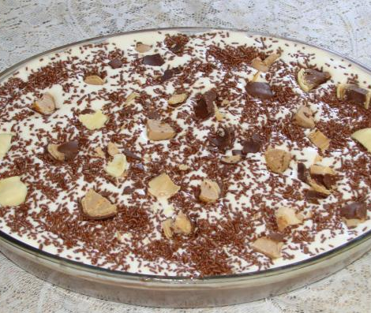

TORTA DE BOLACHA

INGREDIENTES:
- 3 colheres de maisena
- 2 ovos
- 1 lata de leite condensado
- 1 pacote de bolacha maria
- 5 colheres de chocolate em pó
- 1 xícara de açúcar
- 1 lata de creme de leite
- 1 l de leite e mais um pouco para molhar as bolachas
MODO DE PREPARO:
- Em uma panela grande, misture a maisena, o chocolate em pó e o açúcar.
- Coloque o leite aos poucos, para dissolver.
- Separe os ovos em gema e clara, reserve as claras, misture as gemas em uma xícara e coloque dentro da panela.
- Por último, coloque o leite condensado e misture bem.
- Leve ao fogo e mexa de vez em quando.
- Molhe as bolachas em um pouco de leite, e coloque uma camada de bolacha em um refratário grande até que cubra o fundo.
- Não deixe a mistura engrossar muito, quando começar a ferver abaixe o fogo e misture até ficar cremosa.
- Coloque uma camada de creme sobre as bolachas.
- Repita a operação até a panela ficar vazia
- A última camada deve ser a do creme.
- Bata as claras em neve, adicione as duas colheres de açúcar e bata mais um pouco.
- Adicione por fim o creme de leite e misture agora com uma colher.
- Coloque este creme branco sobre a torta.
- Sirva gelado.